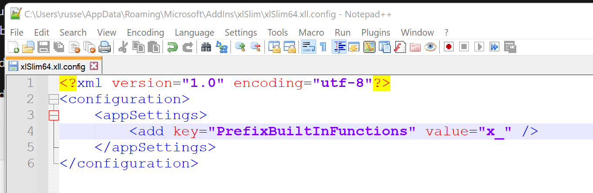
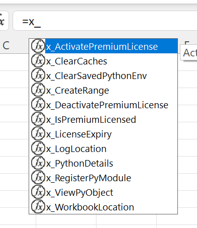

Troubleshooting
Logs
The log files will usually contain details of what has gone wrong.
The function LogLocation() can be used to find the log location.
- Two log files are present:
xlslim-addin.log - this log contains xlSlim’s internal logs, details of module registrations and so on.
xlslim-python.log - this is a regular Python log file, if your code logs with the regular Python logging module then your log messages will be redirected here.
The xlSlim internal log uses the Nlog project, the usual NLog.config configuration file can be used to amend the logging.
The Python logging can be customised by editing the PyLogging-EXCEL.conf configuration file.
Licensing
For licensing issues, see Licensing, in particular note the standalone “xlSlim License Manager” application that can be used to view license details and perform offline activations.
If you are behind a firewall please whitelist api.licensespring.com on port 443.
Function Name Collisions
If you find that the xlSlim built-in function names, as listed in Excel Functions, clash with the names of other add-in functions then you can prefix the xlSlim function names. Edit the “PrefixBuiltInFunctions” entry in the “appSettings” section of the “xlSlim64.xll.config” file in your installation folder. The function LogLocation() will show your installation location (unless you have redirected your logs).
Adding x_ in the config file:
{kind=link}
Results in all the built-in functions being prefixed with x_:
{kind=link}
Functions Overwriting
Function names are not case sensitive in Excel, so if you register a counter() function and later register a Counter() function the second function will replace the first in Excel.
VBA Replacement Code Crashing
Be careful to never modify the cell currently being evaluated. Usually it is safest to use a button to run code that modifies workbooks and worksheets.
General
Python environment problems can be investigated with the PythonDetails() function.
If your Excel workbook is not saved you may experience issues with object cache handle name collisions. This is due to how xlSlim constructs the cache handle using a combination of workbook name, tab name and cell adress. Unsaved workbooks share names such as Book1, Book2 and so on. Usually these problems can be solved by using the ClearCaches() to clear the caching and then saving the workbook you are working on.
Over time, the Google group xlslim-support will become a repository of common issues and solutions.